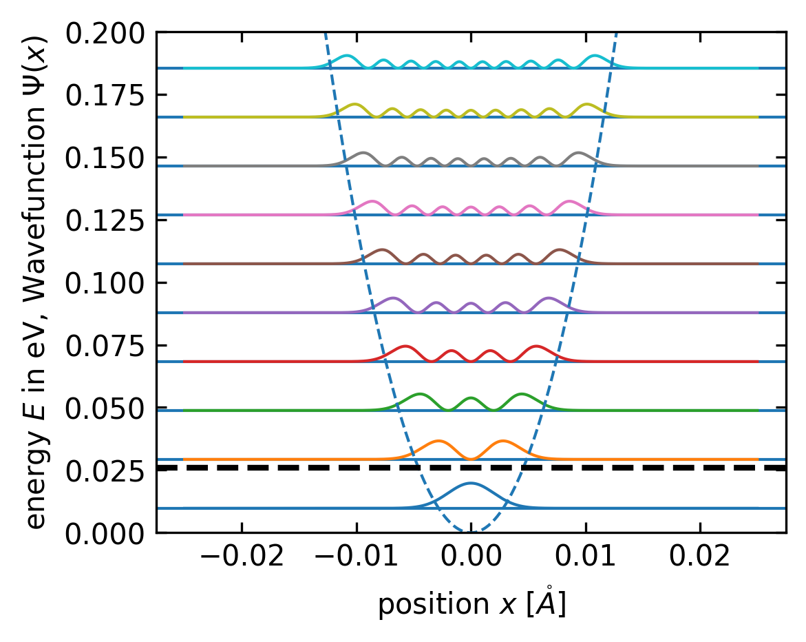
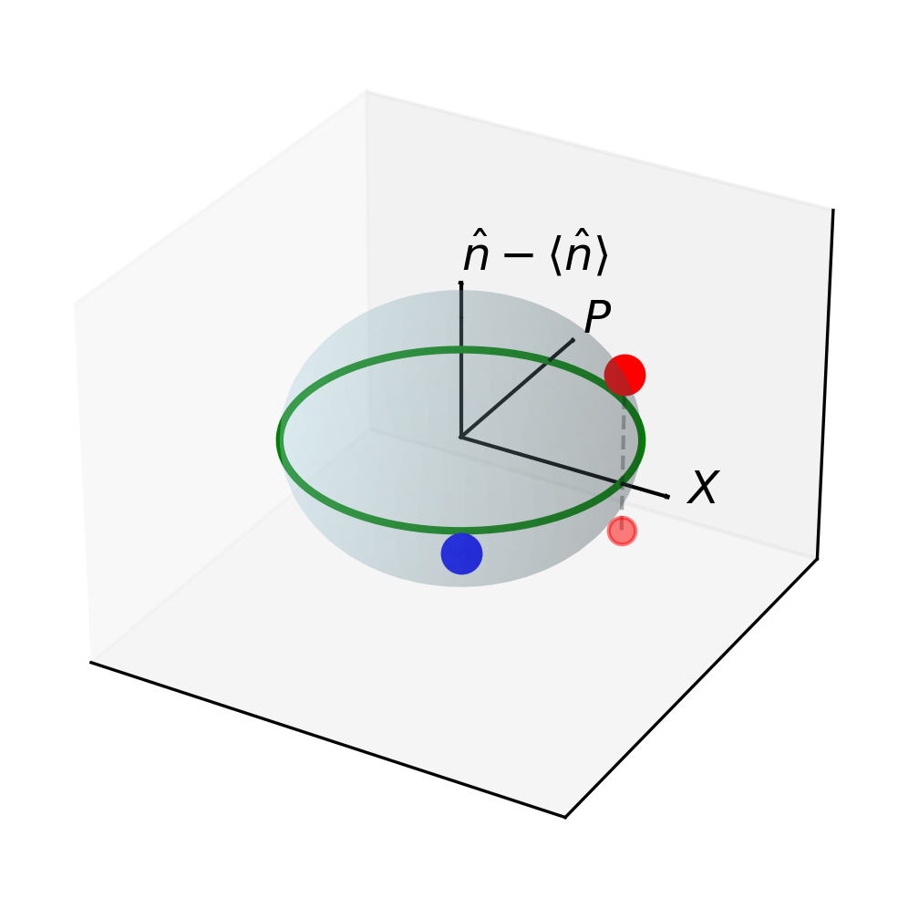

Quantum Optics: From Classical Fields to Entangled Photons
Introduction to Quantum Optics
Quantum optics explores the nature of light beyond classical electromagnetic theory by incorporating quantum mechanical principles. While classical optics successfully describes many phenomena (interference, diffraction, polarization), it fails to explain observations at the single-photon level. Quantum optics bridges this gap by treating light as both a wave and a collection of particles (photons).
This lecture builds upon your knowledge of classical electromagnetism (Maxwell’s equations), basic quantum mechanics (operators, wavefunctions, uncertainty), and harmonic oscillators (both classical and quantum).
We’ll start by quantizing the electromagnetic field, then explore the quantum properties of light, and finally examine quantum entanglement—a phenomenon with no classical analog.
Quantization of the Electromagnetic Field
Before we dive into the quantum nature of light, let’s connect our previous discussions of wave optics to the full electromagnetic wave theory. In earlier lectures, we explored scalar wave equations, plane and spherical waves, and interference phenomena. Now we’ll extend these concepts to the vector electromagnetic fields, which will provide the foundation for quantization.
Recall that Maxwell’s equations unify electricity and magnetism, showing that time-varying electric fields create magnetic fields and vice versa. These equations yield electromagnetic waves that propagate at the speed of light \(c\). The wave equations for the electric and magnetic fields:
\[\nabla^2 \vec{E} - \frac{1}{c^2}\frac{\partial^2 \vec{E}}{\partial t^2} = 0\] \[\nabla^2 \vec{B} - \frac{1}{c^2}\frac{\partial^2 \vec{B}}{\partial t^2} = 0\]
have plane wave solutions similar to those we studied earlier. These solutions can be elegantly written in complex form:
\[\vec{E}(\vec{r},t) = \vec{E}_0 e^{i(\vec{k}\cdot\vec{r} - \omega t + \phi)}\] \[\vec{B}(\vec{r},t) = \vec{B}_0 e^{i(\vec{k}\cdot\vec{r} - \omega t + \phi)}\]
It’s important to remember that the physically measurable electric and magnetic fields are real-valued. The actual physical fields are the real parts of these complex expressions:
\[\vec{E}(\vec{r},t) = \text{Re}[\vec{E}_0 e^{i(\vec{k}\cdot\vec{r} - \omega t + \phi)}] = \vec{E}_0 \cos(\vec{k}\cdot\vec{r} - \omega t + \phi)\] \[\vec{B}(\vec{r},t) = \text{Re}[\vec{B}_0 e^{i(\vec{k}\cdot\vec{r} - \omega t + \phi)}] = \vec{B}_0 \cos(\vec{k}\cdot\vec{r} - \omega t + \phi)\]
where:
- \(\vec{E}_0\) is the electric field amplitude vector (determining polarization)
- \(\vec{B}_0\) is the magnetic field amplitude vector
- \(\vec{k}\) is the wavevector (determining propagation direction)
- \(\omega = c|\vec{k}|\) is the angular frequency
- \(\phi\) is the phase
Importantly, Maxwell’s equations impose strict relationships between these vectors:
- \(\vec{E} \perp \vec{B} \perp \vec{k}\) (all three vectors are mutually perpendicular)
- \(\vec{E} \times \vec{B}\) points in the direction of propagation \(\vec{k}\)
- The magnitudes are related by \(|\vec{B}| = \frac{1}{c}|\vec{E}|\)
These relationships give electromagnetic waves their transverse nature. The right-hand rule provides a convenient way to visualize these relationships: if your thumb points in the direction of \(\vec{k}\), your index finger in the direction of \(\vec{E}\), then your middle finger points in the direction of \(\vec{B}\).
These waves carry energy and momentum through space, with energy density proportional to \(|\vec{E}|^2 + |\vec{B}|^2\). For a monochromatic wave, the time-averaged energy density is:
\[\langle u \rangle = \frac{1}{2}\epsilon_0 |\vec{E}_0|^2\]
This classical description successfully explains phenomena like interference, diffraction, and polarization. However, it treats light as a continuous wave with arbitrarily small amplitudes possible - a view that breaks down at the microscopic level where the quantum nature of light becomes apparent.
When we quantize this classical field theory, we’ll find that electromagnetic energy comes in discrete packets (photons), and the wave amplitudes become operators with inherent uncertainty. This quantum leap will allow us to explain phenomena that have no classical explanation, such as spontaneous emission and the photoelectric effect.
The Classical Starting Point
In classical electromagnetism, light is described by Maxwell’s equations. For a single mode of the electromagnetic field in a cavity of volume \(V\), we can define two fundamental components that behave analogously to the position and momentum of a harmonic oscillator.
Let’s define these two field quadrature components as:
\[X(t) = \frac{1}{\sqrt{2}}(a(t) + a^*(t))\] \[P(t) = \frac{i}{\sqrt{2}}(a^*(t) - a(t))\]
where \(a(t)\) and \(a^*(t)\) are the complex amplitudes in the expressions for the electric and magnetic fields:
\[\vec{E}(\vec{r},t) = E_0(a(t)\vec{\epsilon}e^{i\vec{k}\cdot\vec{r}} + a^*(t)\vec{\epsilon}^*e^{-i\vec{k}\cdot\vec{r}})\] \[\vec{B}(\vec{r},t) = B_0(a(t)(\vec{k}\times\vec{\epsilon})e^{i\vec{k}\cdot\vec{r}} + a^*(t)(\vec{k}\times\vec{\epsilon})^*e^{-i\vec{k}\cdot\vec{r}})\]
Here:
- \(E_0\) and \(B_0\) are amplitude constants
- \(\vec{k}\) is the wavevector
- \(\vec{\epsilon}\) is the polarization vector
The time evolution of these quadratures follows:
\[X(t) = X(0)\cos(\omega t) + P(0)\sin(\omega t)\] \[P(t) = P(0)\cos(\omega t) - X(0)\sin(\omega t)\]
This shows the oscillatory exchange between the two quadratures, exactly as position and momentum evolve in a harmonic oscillator.
The total energy of the field can be calculated by integrating the energy density over the volume:
\[H = \frac{1}{2}\int_V \left(\epsilon_0 E^2 + \frac{1}{\mu_0}B^2\right)d^3r\]
When expressed in terms of the complex amplitudes, this becomes:
\[H = \epsilon_0 E_0^2 V |a(t)|^2 = \epsilon_0 E_0^2 V a^*(t)a(t)\]
This can be rewritten in terms of our quadrature components as:
\[H = \frac{1}{2}\epsilon_0 E_0^2 V (X^2(t) + P^2(t))\]
The electromagnetic energy can be separated into two parts analogous to potential and kinetic energy:
\[H = H_{\text{potential}} + H_{\text{kinetic}} = \frac{1}{2}\epsilon_0 E_0^2 V X^2(t) + \frac{1}{2}\epsilon_0 E_0^2 V P^2(t)\]
This is precisely the form of energy for a classical harmonic oscillator, where \(X(t)\) plays the role of position and \(P(t)\) the role of momentum. Just as in a mechanical oscillator where energy oscillates between potential (proportional to \(x^2\)) and kinetic (proportional to \(p^2\)), the electromagnetic field’s energy oscillates between its electric field component (related to \(X(t)\)) and magnetic field component (related to \(P(t)\)).
In the quantization procedure, we identify this classical energy with the quantum Hamiltonian by making the correspondence:
\[\epsilon_0 E_0^2 V = \hbar\omega\]
This gives us:
\[H = \frac{1}{2}\hbar\omega(X^2(t) + P^2(t)) = \hbar\omega(a^*(t)a(t) + \frac{1}{2})\]
The last term emerges from the operator ordering in the quantum case. Here, \(a^*(t)a(t) = |a(t)|^2\) represents the classical field intensity, which will later be proportional to the number of photons in the quantum description.
The Quantum Leap
The key insight of quantum optics is recognizing that this energy expression resembles the Hamiltonian of a quantum harmonic oscillator. This suggests we can quantize the field by:
- Replacing the complex amplitudes \(a\) and \(a^*\) with operators \(\hat{a}\) and \(\hat{a}^\dagger\)
- Imposing the commutation relation \([\hat{a}, \hat{a}^\dagger] = 1\)
The Hamiltonian then becomes:
\[\hat{H} = \hbar\omega(\hat{a}^\dagger\hat{a} + \frac{1}{2})\]
Intuitively, this “quantum leap” is like changing our view of light from continuous ocean waves to individual water droplets (photons). Just as water appears continuous in large amounts but consists of discrete molecules, electromagnetic energy that seemed continuous in classical physics now comes in discrete “chunks” or quanta. The operators \(\hat{a}\) and \(\hat{a}^\dagger\) act like accounting tools that remove or add these energy quanta to our system, similar to how you might withdraw or deposit discrete bills from a bank account rather than arbitrary amounts of money.
This is exactly the Hamiltonian of a quantum harmonic oscillator, where:
- \(\hat{a}^\dagger\hat{a} = \hat{n}\) is the number operator
- The eigenvalues of \(\hat{n}\) represent the number of photons in the field mode
- The energy eigenvalues are \(E_n = \hbar\omega(n + \frac{1}{2})\)
Physical Interpretation
The quantized electromagnetic field has discrete energy levels, with each step corresponding to the addition or removal of one photon with energy \(\hbar\omega\). The operators have specific actions:
- \(\hat{a}^\dagger\) creates a photon: \(\hat{a}^\dagger|n\rangle = \sqrt{n+1}|n+1\rangle\)
- \(\hat{a}\) annihilates (removes) a photon: \(\hat{a}|n\rangle = \sqrt{n}|n-1\rangle\)
The states \(|n\rangle\) are called Fock states or photon number states, representing exactly \(n\) photons in the mode.
Quadrature Components of the Electromagnetic Field
Deeper Physical Meaning of Quadratures
Building on our earlier introduction to field quantization, let’s explore the physical meaning of the quadrature components in more depth.
The quadrature components we’ve defined:
- \(X(t) = |a|\cos(\omega t)\) (position-like quadrature)
- \(P(t) = |a|\sin(\omega t)\) (momentum-like quadrature)
represent orthogonal components of the electromagnetic field oscillation. In the Bloch sphere picture familiar from quantum mechanics, these correspond to projections onto different axes, as we’ll visualize shortly.
To visualize these quadratures more concretely, think of the classic children’s swing. The \(X\) quadrature is like the displacement of the swing from its center position (how far forward or backward it is at any moment), while the \(P\) quadrature represents how fast the swing is moving (its momentum). When the swing is at its maximum extension (\(X\) is maximum), it momentarily stops (\(P\) is zero). When the swing passes through the center (\(X\) is zero), it’s moving at its maximum speed (\(P\) is maximum). These quadratures give us complementary information about the oscillation, just as position and momentum do for a particle.
Code
import numpy as np
import matplotlib.pyplot as plt
from mpl_toolkits.mplot3d import Axes3D
# Create figure
fig = plt.figure(figsize=get_size(10, 8))
ax = fig.add_subplot(111, projection='3d')
# Draw the Bloch sphere
u = np.linspace(0, 2 * np.pi, 50)
v = np.linspace(0, np.pi, 50)
x = np.outer(np.cos(u), np.sin(v))
y = np.outer(np.sin(u), np.sin(v))
z = np.outer(np.ones(np.size(u)), np.cos(v))
ax.plot_surface(x, y, z, color='lightblue', alpha=0.2, edgecolor='none')
# Draw coordinate system using simple lines and quiver for arrows
# X-axis (X quadrature)
ax.plot([0, 1.0], [0, 0], [0, 0], 'k-', lw=1)
ax.quiver(1.0, 0, 0, 0.3, 0, 0, color='k', arrow_length_ratio=0.1)
ax.text(1.4, 0, 0, r'$X$', fontsize=12)
# Y-axis (P quadrature)
ax.plot([0, 0], [0, 1.0], [0, 0], 'k-', lw=1)
ax.quiver(0, 1.0, 0, 0, 0.3, 0, color='k', arrow_length_ratio=0.1)
ax.text(0, 1.4, 0, r'$P$', fontsize=12)
# Z-axis (Energy difference)
ax.plot([0, 0], [0, 0], [0, 1.0], 'k-', lw=1)
ax.quiver(0, 0, 1.0, 0, 0, 0.3, color='k', arrow_length_ratio=0.1)
ax.text(0, 0, 1.4, r'$\hat{n} - \langle\hat{n}\rangle$', fontsize=12)
# Draw the equator (phase space for coherent states)
theta = np.linspace(0, 2 * np.pi, 100)
x_circle = np.cos(theta)
y_circle = np.sin(theta)
z_circle = np.zeros_like(theta)
ax.plot(x_circle, y_circle, z_circle, 'g-', linewidth=2, label='Phase space plane')
# Add some representative states
# Vacuum state at the south pole
ax.scatter([0], [0], [-1], color='blue', s=100, label='Vacuum state')
# Coherent state
alpha = 0.7 # Displacement
phi = np.pi/4 # Phase angle
# Coherent state coordinates on Bloch sphere
x_coherent = 2*alpha*np.cos(phi) / (1 + alpha**2)
y_coherent = 2*alpha*np.sin(phi) / (1 + alpha**2)
z_coherent = (1 - alpha**2) / (1 + alpha**2)
ax.scatter([x_coherent], [y_coherent], [z_coherent], color='red', s=100, label='Coherent state')
# Draw projection lines to the XP plane
ax.plot([x_coherent, x_coherent], [y_coherent, y_coherent], [z_coherent, -1], 'k--', alpha=0.3)
ax.scatter([x_coherent], [y_coherent], [-1], color='red', s=50, alpha=0.5)
# Set plot limits and labels
ax.set_xlim([-1.5, 1.5])
ax.set_ylim([-1.5, 1.5])
ax.set_zlim([-1.5, 1.5])
# Add a legend
#ax.legend(loc='upper right')
# Remove axis ticks
ax.set_xticks([])
ax.set_yticks([])
ax.set_zticks([])
# Adjust the padding
fig.subplots_adjust(left=0.01, right=0.99, top=0.99, bottom=0.01)

In this Bloch sphere representation, the \(X\) and \(P\) quadratures form the equatorial plane (analogous to the real and imaginary parts of a complex amplitude), while the vertical axis represents the energy difference from the average. The vacuum state sits at the south pole, while coherent states with different amplitudes and phases are represented by points displaced from this pole. As the coherent state’s amplitude increases, it moves closer to the equatorial plane, representing increasingly “classical” behavior. This geometric picture helps us visualize how quantum states of light relate to their quadrature components.
Why are these quadratures important? Just as position and momentum completely characterize a mechanical oscillator, these two quadratures fully describe the electromagnetic field’s state. They provide an intuitive connection between the classical wave picture and the quantum particle nature of light.
For experimental physicists, these quadratures are particularly valuable because they can be directly measured using homodyne detection techniques, where the signal field is mixed with a strong local oscillator field.
Quantum Fluctuations in Quadratures
When we quantize the field, the quadrature operators:
\[\hat{X} = \frac{1}{\sqrt{2}}(\hat{a} + \hat{a}^\dagger)\] \[\hat{P} = \frac{i}{\sqrt{2}}(\hat{a}^\dagger - \hat{a})\]
exhibit quantum fluctuations even in the vacuum state \(|0\rangle\). These vacuum fluctuations represent the zero-point energy of the field and have measurable consequences.
Imagine a completely dark room that appears to have no light in it. Classically, you’d expect the electric field to be exactly zero everywhere - perfectly still. But quantum mechanics tells us that’s impossible! Even in this “vacuum” state, the field is actually jittering around with tiny random fluctuations, like a guitar string that can never be perfectly still, even at absolute zero temperature. These vacuum fluctuations are the “quantum noise” that sets fundamental limits on how precisely we can measure optical signals, and they’re responsible for fascinating effects like spontaneous emission and the Casimir effect.
To understand these fluctuations, let’s first examine the commutation relation between these operators. Using the fundamental commutation relation \([\hat{a},\hat{a}^\dagger]=1\), we find:
\[[\hat{X},\hat{P}] = \frac{1}{2}[\hat{a}+\hat{a}^\dagger, i(\hat{a}^\dagger-\hat{a})] = i\]
This non-zero commutator implies an uncertainty relation between the quadratures, similar to the position-momentum uncertainty principle in quantum mechanics.
For the vacuum state:
- \(\langle 0|\hat{X}|0\rangle = \langle 0|\hat{P}|0\rangle = 0\) (zero mean values)
- \(\langle 0|\hat{X}^2|0\rangle = \langle 0|\hat{P}^2|0\rangle = \frac{1}{2}\) (non-zero variances)
We can verify these results explicitly. For example: \[\langle 0|\hat{X}|0\rangle = \frac{1}{\sqrt{2}}\langle 0|(\hat{a}+\hat{a}^\dagger)|0\rangle = \frac{1}{\sqrt{2}}(\langle 0|\hat{a}|0\rangle + \langle 0|\hat{a}^\dagger|0\rangle) = 0\]
since \(\hat{a}|0\rangle = 0\) and \(\langle 0|\hat{a}^\dagger|0\rangle = \langle 1|0\rangle = 0\) (as different Fock states are orthogonal).
For the variance calculation, let’s work through it step by step:
\[\langle 0|\hat{X}^2|0\rangle = \frac{1}{2}\langle 0|(\hat{a}+\hat{a}^\dagger)^2|0\rangle = \frac{1}{2}\langle 0|(\hat{a}^2 + \hat{a}\hat{a}^\dagger + \hat{a}^\dagger\hat{a} + (\hat{a}^\dagger)^2)|0\rangle\]
Let’s evaluate each term separately:
\(\langle 0|\hat{a}^2|0\rangle = \langle 0|\hat{a} \cdot \hat{a}|0\rangle = \langle 0|\hat{a} \cdot 0\rangle = 0\) (since \(\hat{a}|0\rangle = 0\))
\(\langle 0|(\hat{a}^\dagger)^2|0\rangle = \langle 0|\hat{a}^\dagger \cdot \hat{a}^\dagger|0\rangle\)
Working from right to left:
- First, \(\hat{a}^\dagger|0\rangle = |1\rangle\)
- Then, \(\hat{a}^\dagger|1\rangle = \sqrt{2}|2\rangle\)
So \(\langle 0|(\hat{a}^\dagger)^2|0\rangle = \langle 0|\sqrt{2}|2\rangle = \sqrt{2}\langle 0|2\rangle = 0\)
This equals zero because different Fock states are orthogonal to each other (\(\langle 0|2\rangle = 0\)).
\(\langle 0|\hat{a}^\dagger\hat{a}|0\rangle = \langle 0|\hat{n}|0\rangle = 0\) (since \(\hat{n}|0\rangle = 0|0\rangle = 0\))
\(\langle 0|\hat{a}\hat{a}^\dagger|0\rangle = \langle 0|(\hat{a}^\dagger\hat{a} + [\hat{a},\hat{a}^\dagger])|0\rangle = \langle 0|\hat{a}^\dagger\hat{a}|0\rangle + \langle 0|1|0\rangle = 0 + 1 = 1\)
Here we used the commutation relation \([\hat{a},\hat{a}^\dagger] = \hat{a}\hat{a}^\dagger - \hat{a}^\dagger\hat{a} = 1\), which gives us \(\hat{a}\hat{a}^\dagger = \hat{a}^\dagger\hat{a} + 1\).
Therefore: \[\langle 0|\hat{X}^2|0\rangle = \frac{1}{2} \cdot 1 = \frac{1}{2}\]
We can perform a similar calculation for the P quadrature:
\[\langle 0|\hat{P}^2|0\rangle = \frac{1}{2}\langle 0|(-i)^2(\hat{a}^\dagger - \hat{a})^2|0\rangle = \frac{1}{2}\langle 0|(\hat{a}^\dagger)^2 - \hat{a}^\dagger\hat{a} - \hat{a}\hat{a}^\dagger + \hat{a}^2|0\rangle\]
Following the same analysis as above, only the \(-\hat{a}\hat{a}^\dagger\) term contributes, giving: \[\langle 0|\hat{P}^2|0\rangle = \frac{1}{2} \cdot 1 = \frac{1}{2}\]
The standard deviations are therefore: \[\Delta X_{vacuum} = \sqrt{\langle 0|\hat{X}^2|0\rangle - \langle 0|\hat{X}|0\rangle^2} = \sqrt{\frac{1}{2} - 0^2} = \frac{1}{\sqrt{2}}\] \[\Delta P_{vacuum} = \sqrt{\langle 0|\hat{P}^2|0\rangle - \langle 0|\hat{P}|0\rangle^2} = \sqrt{\frac{1}{2} - 0^2} = \frac{1}{\sqrt{2}}\]
These vacuum fluctuations are a direct manifestation of the commutation relation \([\hat{X}, \hat{P}] = i\) and the resulting Heisenberg uncertainty principle:
\[\Delta X \cdot \Delta P \geq \frac{1}{2}\]
For the vacuum state, we find \(\Delta X \cdot \Delta P = \frac{1}{\sqrt{2}} \cdot \frac{1}{\sqrt{2}} = \frac{1}{2}\), which exactly equals the minimum allowed value. This proves that the vacuum is a minimum uncertainty state, with fluctuations distributed equally between both quadratures.
These fluctuations have profound physical consequences:
- Spontaneous emission: Atoms can decay from excited states even in vacuum due to interaction with these field fluctuations
- Lamb shift: The energy levels of atoms are altered by vacuum fluctuations
- Casimir effect: Physical forces arise between uncharged metallic plates due to the modification of vacuum fluctuations
- Quantum noise: These fluctuations set the fundamental noise floor in quantum-limited measurements
In quantum optics experiments, vacuum fluctuations enter through unused ports of beam splitters and introduce noise that limits measurement precision. However, this limitation can be circumvented using squeezed states, where fluctuations in one quadrature are reduced below the vacuum level at the expense of increased fluctuations in the conjugate quadrature.